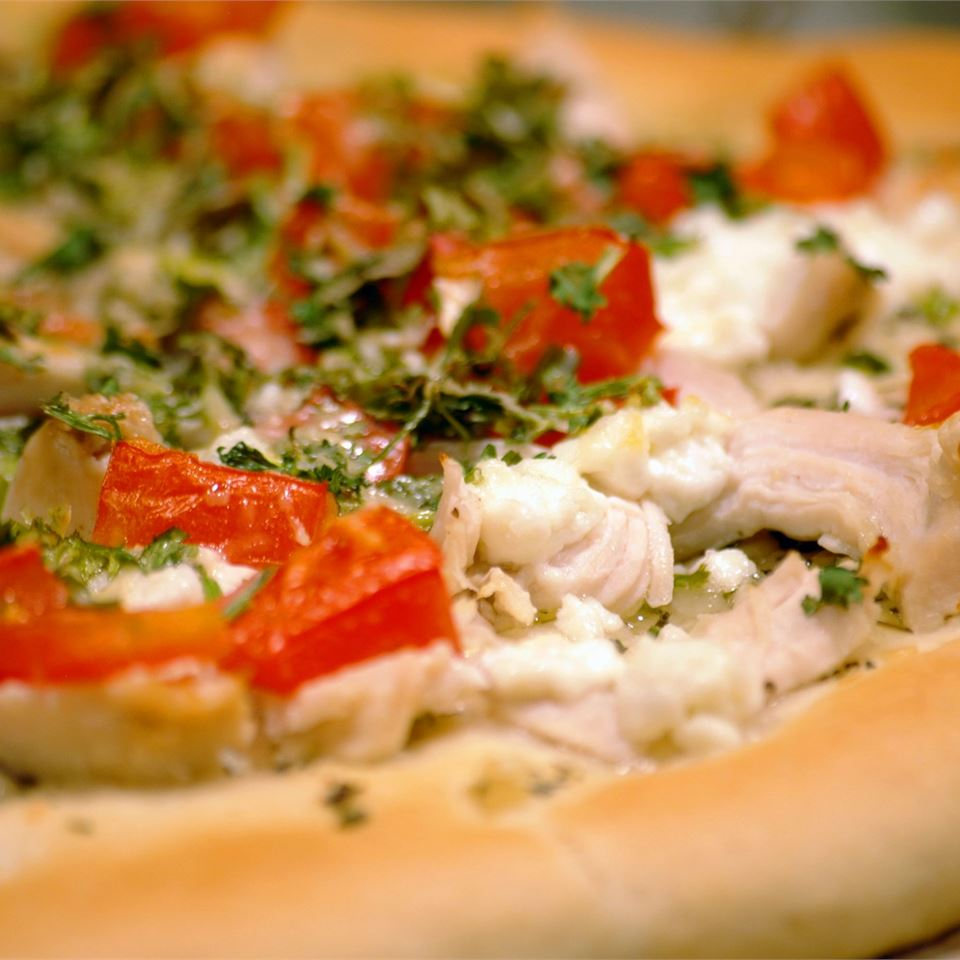

Chicken Garlic Pizza Recipe

Description
A delicious option for homemade pizza! Butter garlic sauce, chicken, tomato, and ricotta and parmesan cheeses are baked together for a delightfully light pizza.
Ingredients
- 1 skinless, boneless chicken breast half
- 2 tablespoons butter or margairne, softened
- 2 cloves garlic, minced
- 2 tablespoons chopped green onion
- 1/2 teaspoon dried basil
- 1 (10 ounce) can refrigerated pizza crust dough
- 2 roma (plum) tomatoes, diced
- 1/2 cup chopped fresh cilantro
- 1/2 cup ricotta cheese
- 1/4 cup grated parmesan cheese
Steps
- Place the chicken breast in a saucepan with enough water to cover. Bring to a boil, and cook until no longer pink, about 20 minutes. Drain and cool slightly, then cut into strips.
- Meanwhile, in a small skillet over medium heat, melt the butter with garlic, onion, and basil. Pour into a chilled dish to cool, and refigerate until set.
- Preheat the oven to 350 degrees F (175 degrees C).
- Roll out the pizza dough, place onto a pizza pan or other baking sheet, and spread the herb butter over the surface using the back of a spoon. Arrange chicken on top, then dot with ricotta chesse. Top with tomato slices, cilantro, and parmesan cheese.
- Bake for 15 to 20 minutes in the preheated oven, until crust is browned and center is cooked through.